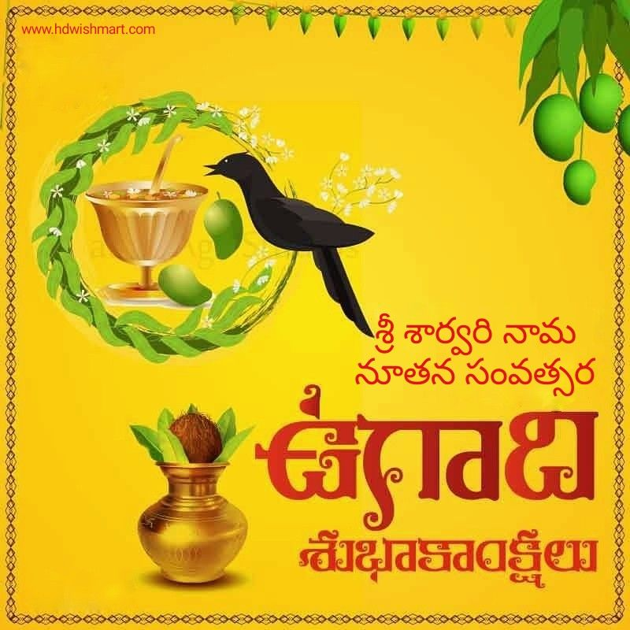
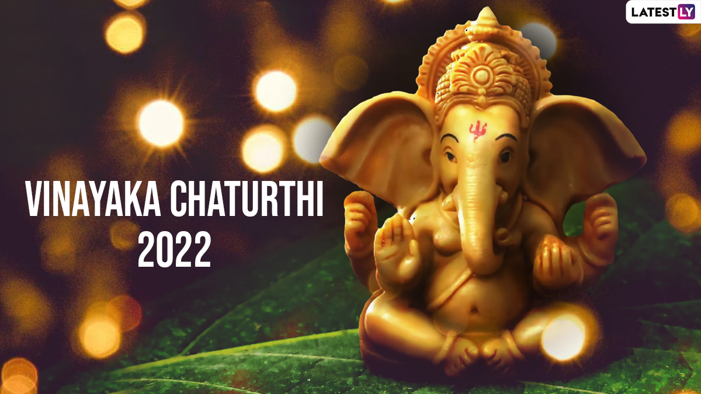
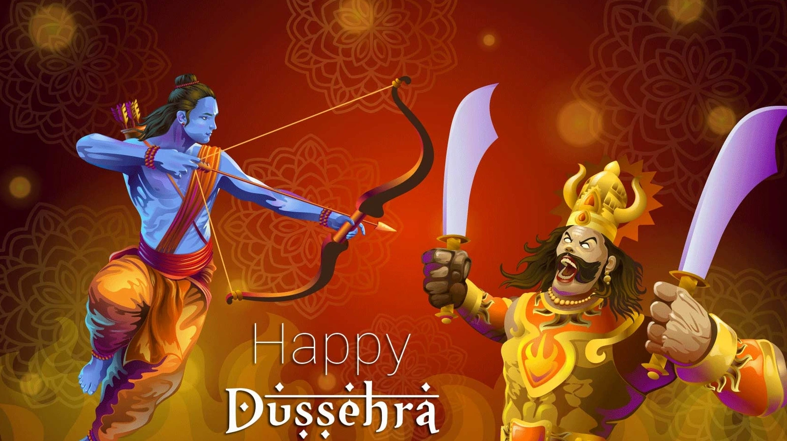

Major Festivals of Andhra Pradesh
Andhra Pradesh is known for its vibrant and colorful festivals, each reflecting the rich cultural heritage of the region. Below are some of the most celebrated festivals in Andhra Pradesh.

Ugadi:
Ugadi marks the Telugu New Year and is celebrated with much fervor across Andhra Pradesh. The festival is characterized by the preparation of special dishes, cultural programs, and traditional rituals.
Sankranti:
Sankranti, also known as Pongal, is a major harvest festival in Andhra Pradesh. It is celebrated with the flying of kites, preparation of sweet dishes, and various folk performances.

Vinayaka Chavithi:
This festival is dedicated to Lord Ganesha and is celebrated with great enthusiasm. People create clay idols of Ganesha, offer prayers, and perform traditional rituals at home and in community gatherings.
